Detect Cycle in an Undirected Graph (using DFS)
Problem Statement: Given an undirected graph with V vertices and E edges, check whether it contains any cycle or not using DFS.
Examples
Input : V = 8, E = 7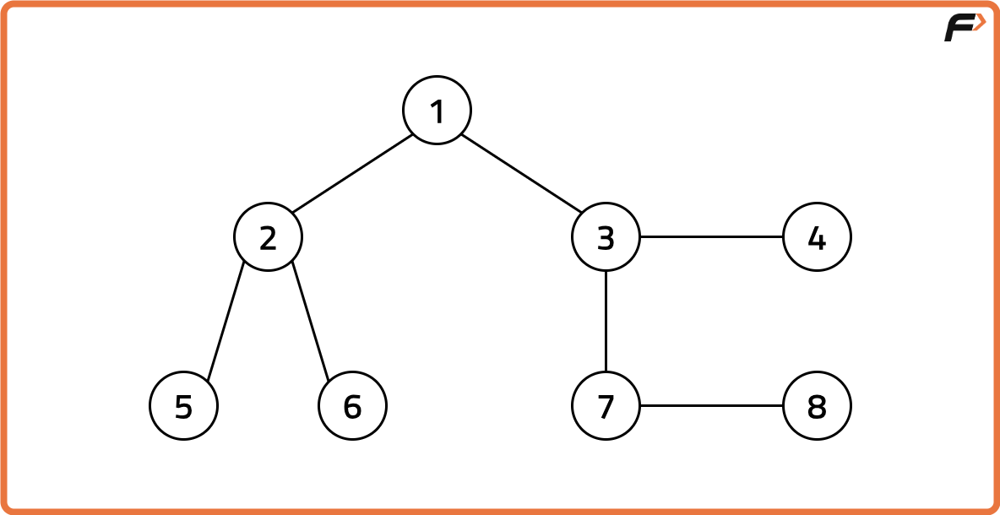
Output : False Explanation : No cycle is present in the given graph Input : V = 8, E = 6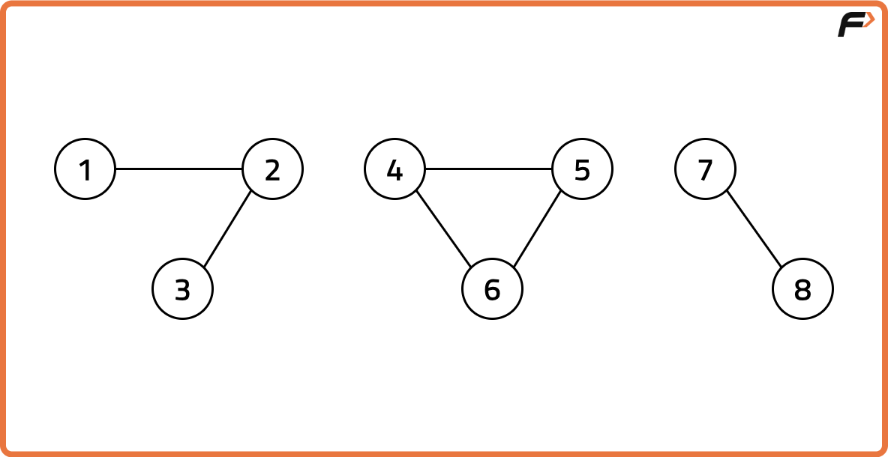
Output : True Explanation : 4->5->6->4 is a cycle.
Disclaimer: Here is the practice link to help you assess your knowledge better. It's highly recommend trying to solve it before looking at the solution.
Approach
Algorithm
In an undirected graph, a cycle exists if while traversing the graph, we encounter a node that has already been visited and it is not the parent of the current node.
Since undirected edges connect both ways, simply seeing a visited node does not guarantee a cycle (it could just be the parent). The trick is to check whether a visited neighbor is different from the parent, if so, we’ve found a cycle.
Depth First Search works well here by using a queue to explore the graph level by level. Along with each node, we also store its parent. When we find an adjacent node that has already been visited and is not the parent, that confirms a cycle.
Depth First Search works well here by using a queue to explore the graph level by level. Along with each node, we also store its parent. When we find an adjacent node that has already been visited and is not the parent, that confirms a cycle.
- Maintain a visited array to keep track of visited nodes.
- Iterate through all nodes to handle disconnected components.
- If a node is unvisited, start a DFS from it with the parent set to -1 (or null).
- In DFS, for the current node, explore all its neighbors.
- If a neighbor is not visited, recursively call DFS with the current node as parent.
- If a neighbor is already visited and is not the parent, then a cycle exists.
- If the DFS completes without such a condition, no cycle exists.
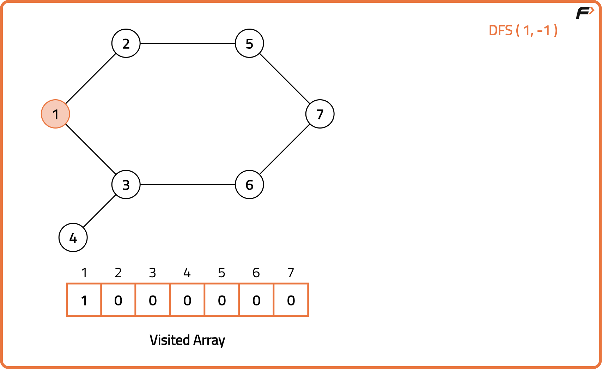
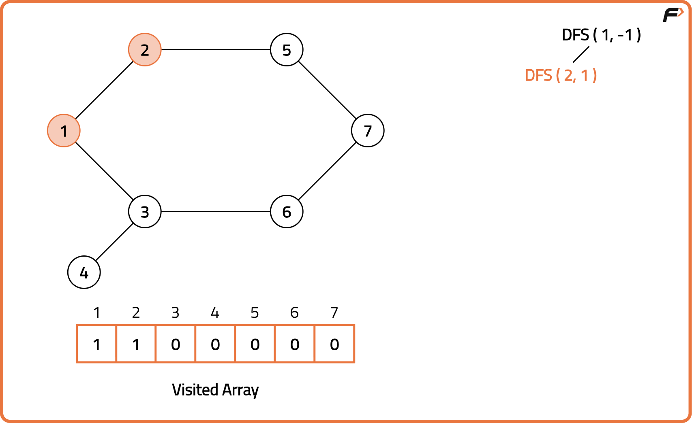
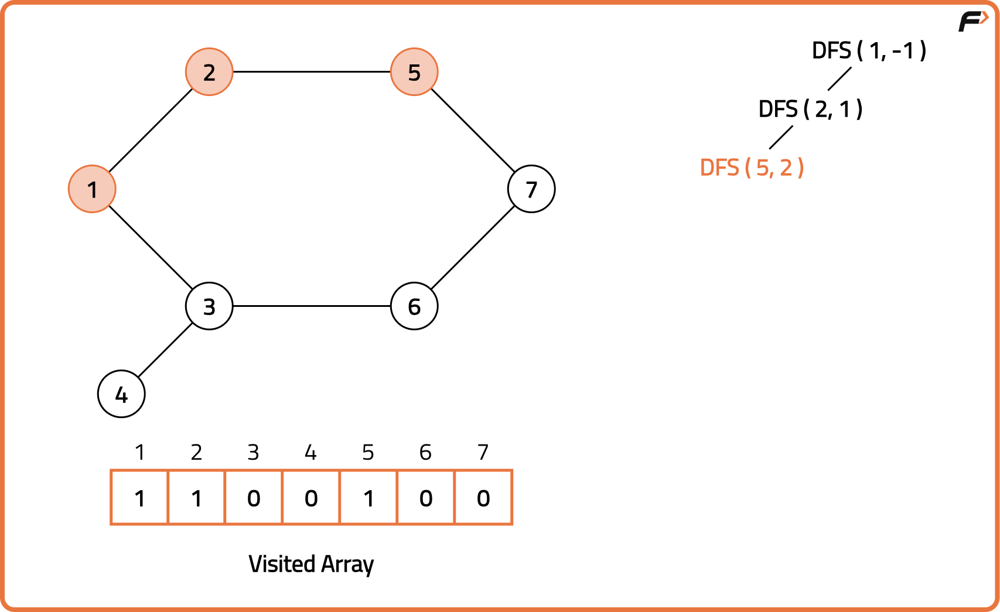
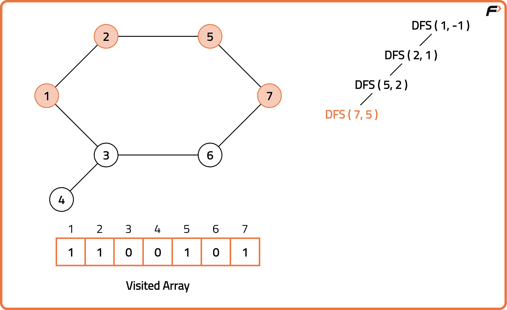
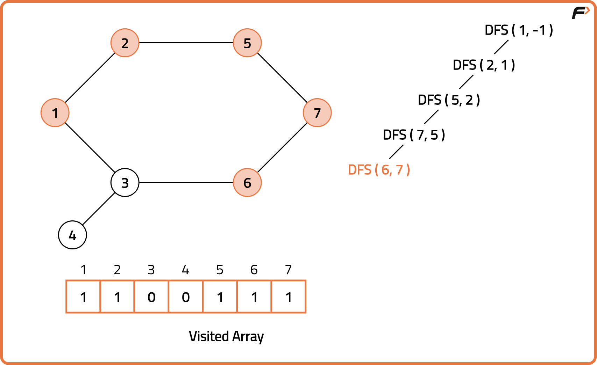
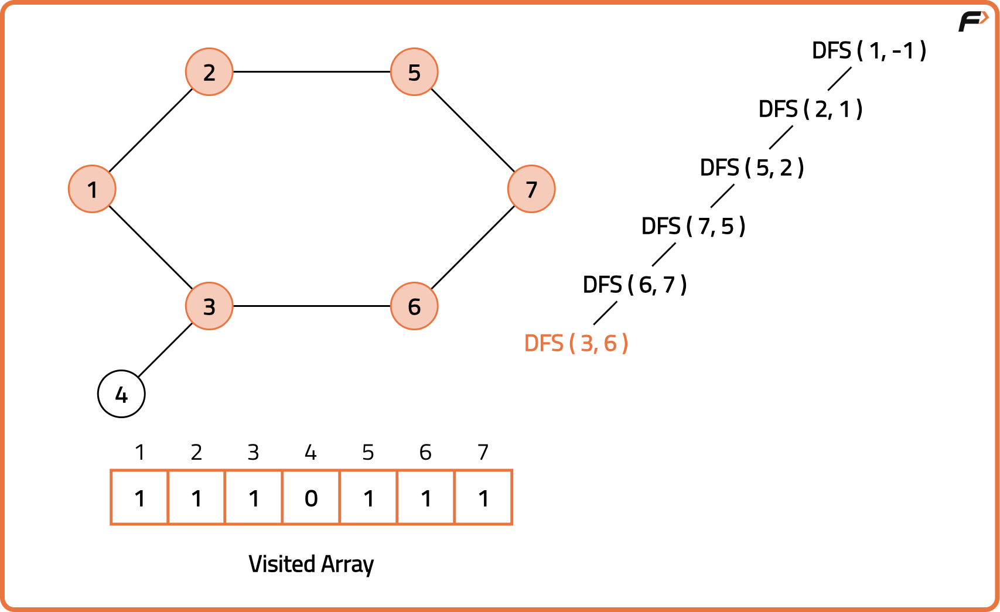
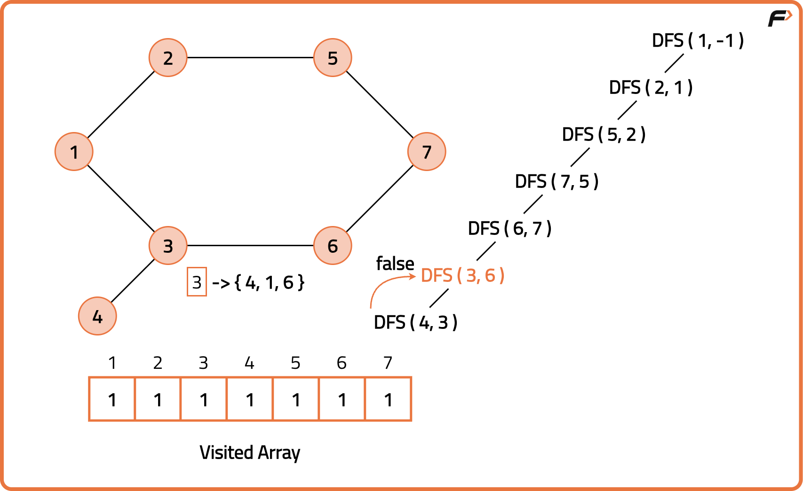
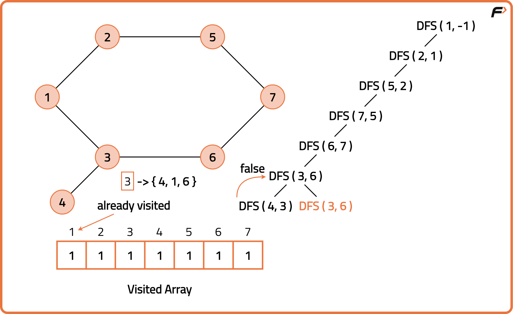
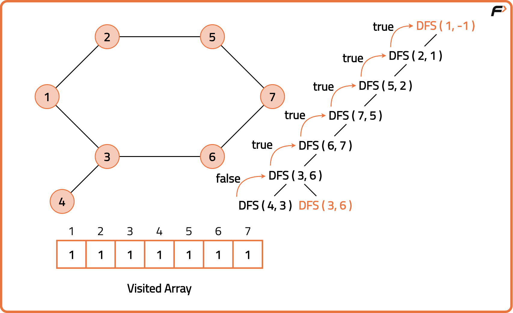
Code
#include <bits/stdc++.h>
using namespace std;
class Solution {
public:
// DFS function to detect cycle
bool dfs(int node, int parent, vector<int> adj[], vector<int>& visited) {
// Mark current node visited
visited[node] = 1;
// Traverse neighbors
for (int neighbor : adj[node]) {
// If neighbor not visited, recurse
if (!visited[neighbor]) {
if (dfs(neighbor, node, adj, visited)) return true;
}
// If neighbor visited and not parent, cycle exists
else if (neighbor != parent) {
return true;
}
}
// No cycle found from this path
return false;
}
// Function to check cycle in graph
bool isCycle(int V, vector<int> adj[]) {
vector<int> visited(V, 0);
// Check all components
for (int i = 0; i < V; i++) {
if (!visited[i]) {
if (dfs(i, -1, adj, visited)) return true;
}
}
return false;
}
};
int main() {
// Example: Graph with 5 nodes and a cycle
int V = 5;
vector<int> adj[V];
// Add edges
adj[0].push_back(1);
adj[1].push_back(0);
adj[1].push_back(2);
adj[2].push_back(1);
adj[2].push_back(3);
adj[3].push_back(2);
adj[3].push_back(4);
adj[4].push_back(3);
adj[4].push_back(1);
Solution sol;
if (sol.isCycle(V, adj))
cout << "Cycle detected\n";
else
cout << "No cycle found\n";
return 0;
}
Complexity Analysis
Time Complexity: O(V+E), we build the adjacency list and explore all the edges and visit all the vertices once during DFS traversal.Space Complexity: O(V+E), additonal space is used to store adjacency list, visited array and recursive call stack for DFS traversal.